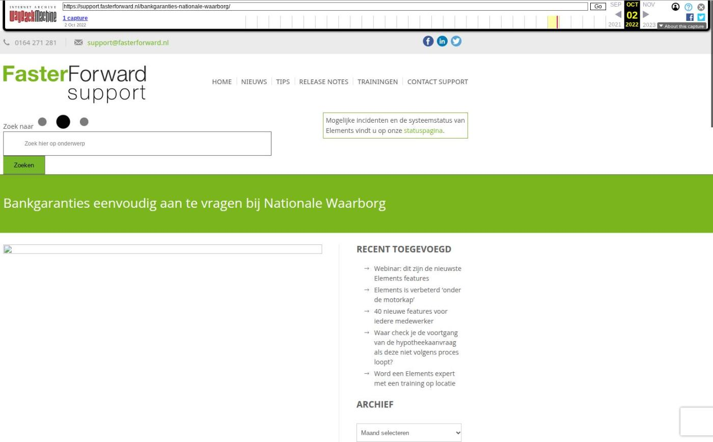

Bankgaranties eenvoudig aan te vragen bij Nationale Waarborg

Tekstinhoud
Het aanvragen van een bankgarantie kan de adviseur veel tijd kosten. De aanvraag verloopt via e-mails, telefoongesprekken of door in te loggen op het portaal van een aanbieder. Dat is verleden tijd!
Vanuit Elements vraag je nu eenvoudig en snel een bankgarantie aan bij Nationale Waarborg via het HDN netwerk.
Bespaar tijd tijdens het aanvragen van een garantiestelling
Het aanvragen van een bankgarantie verloopt vanaf nu net zo soepel als het aanvragen van een hypotheek in Elements. Via HDN vraag je een bankgarantie aan bij Nationale Waarborg. Nationale Waarborg start vervolgens het digitaal ondertekenproces of stuurt je het ingevulde bankgarantie aanvraagformulier. De informatie ontvang je veilig via HDN in jouw Elements omgeving.
Aanvraag ondertekenen
Het bankgarantie aanvraagformulier zet je, indien nodig, met een paar klikken klaar in de Digimap. Kies je voor digitaal ondertekenen, dan ontvangt jouw klant automatisch een e-mail om de ondertekening te voltooien en wordt de aanvraag daarna automatisch bij Nationale Waarborg ingediend.
Wanneer je kiest voor traditioneel ondertekenen, ontvangt de klant in de mijn omgeving een verzoek (bij goedkeuring) om de bankgarantie aanvraag te ondertekenen en het getekende document te uploaden. De ondertekende bankgarantie aanvraag wordt vervolgens via HDN naar Nationale Waarborg verstuurd en aansluitend beoordeeld. Vervolgens wordt de bankgarantie binnen één dag aan het notariaat aangeboden. Mochten aanvullende stukken nodig zijn, wordt hier melding van gemaakt in de Elements stukkenlijst. Zo regel je de bankgarantie efficiënt en volledig digitaal.
Functionaliteit gebruiken?
Als je bankgaranties wilt aanvragen vanuit Elements, meld je dan aan bij Nationale Waarborg via sales@nationalewaarborg.nl. Nationale Waarborg neemt dan contact met je op om afspraken te maken en een overeenkomst op te stellen.
Voor- en achternaam
Je e-mailadres
Telefoonnummer (optioneel)
Wanneer de overeenkomst met Nationale Waarborg is vastgelegd, geeft Nationale Waarborg ons een seintje en kunnen wij de koppeling verder inrichten in Elements. Nadat dit is gebeurd, kan je starten met het aanvragen van bankgaranties via Elements.
Kennisbank artikel
Zodra de koppeling is ingericht, lees je in onderstaand artikel hoe je de functionaliteiten gebruikt.
ZO WERKT HET »
Geplaatst op 17 juli 2022 (Laatste update: 04 augustus 2022)